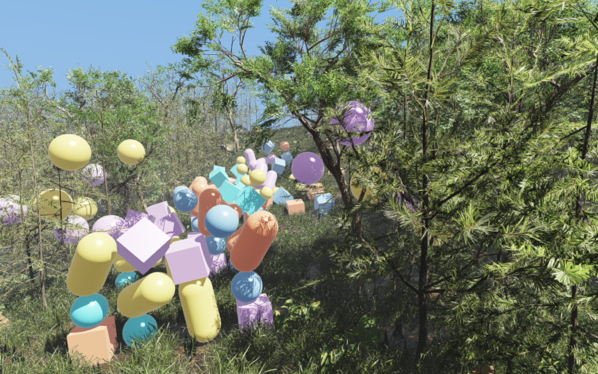

Rayrai Example: Forest From .rscene


Overview
Builds the Rayrai Example: Forest world from its saved RaiSim Engine scene,
rsc/forest/rayrai_forest.rscene, instead of placing every tree, plant and
rock in C++. The whole example is a few lines:
auto world = std::make_shared<raisim::World>(
exampleRscPath(argv[0], "forest/rayrai_forest.rscene"));
raisin::RayraiWindow viewer(world, 1280, 800);
viewer.setAsyncMeshLoadingEnabled(true);
raisin::applyRscene(*world->getRscene(), viewer);
raisim::World(path) reads the solver settings, the 161 × 161 heightmap,
the 2,068 hidden .rasset tree and rock collision bodies and the 100
dynamic props. raisin::applyRscene applies the render settings, sky and
weather, sun, ground texture, the 16 instanced vegetation and rock batches,
and the saved camera. The result simulates exactly like rayrai_forest.
Target
CMake target: rayrai_forest_from_rscene (C++20). Source:
examples/src/rayrai/worlds/rayrai_forest_from_rscene.cpp.
The example needs the .rscene support in raisim::World and
rayrai/RsceneVisuals.hpp, which are new in RaiSim and rayrai v2.7.1 (not
yet released). The 2.7.0 package does not include them, so this target does
not compile against it; build the other targets explicitly instead, for example
cmake --build build-examples --target rayrai_forest.
Run
The example takes no arguments. It finds the scene in the rsc folder that
CMake copies next to the executables:
./build-examples/examples/rayrai_forest_from_rscene
On Windows, run rayrai_forest_from_rscene.exe from build-examples\bin.
The example renders in process and does not need rayrai_tcp_viewer.
Meshes load asynchronously; physics starts once they are ready and then runs
eight 2 ms steps per rendered frame. The mesh LOD caches described in
Rayrai Example: Forest are shared with that example.
Changing the render settings
The scene file stores the rendering parameters: the quality preset and custom renderer settings (MSAA, shadow resolution and cascades, exposure, tone mapping and post effects), the environment (color mode, fog, bloom, SSAO) and the weather. Change them in C++ before applying the scene:
auto render = raisin::rsceneRenderSettings(*world->getRscene());
render.quality.viewerMsaaSamples = 8;
render.weather.timeOfDayHours = 18;
raisin::applyRscene(*world->getRscene(), viewer, render);
With weather enabled, rayrai derives exposure, environment intensity, fog and
shadow strength from these base settings and the sky, so overriding them here
keeps that relationship. After applyRscene, the viewer’s own setters still
change anything.
Supported scene content
The reader supports what a terrain-and-props scene uses: physics settings,
materials, a sampled heightmap with its base texture, box, sphere, cylinder,
capsule, ground and static .rasset bodies, instanced mesh visuals, a
directional light, cameras and the render environment. Editor-only records
are skipped. Anything it cannot reproduce exactly, such as articulated
systems, sensors, parented nodes, painted terrain, non-directional lights or
mesh bodies without a .rasset, is a fatal error naming the line.
.rscene File documents every record and field of the format.
See World for the World constructor and
Rayrai Example: Forest for the assets, scatter and performance notes.